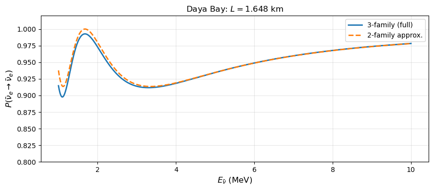
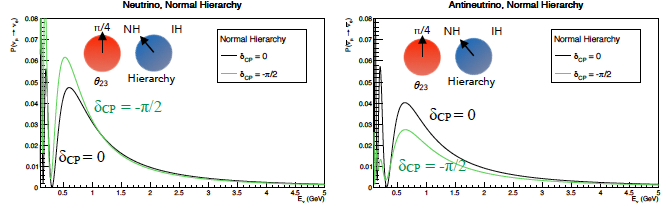
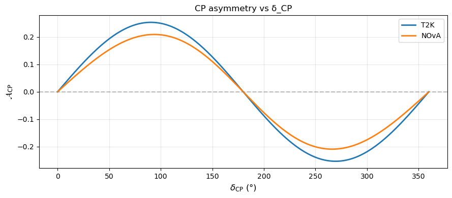
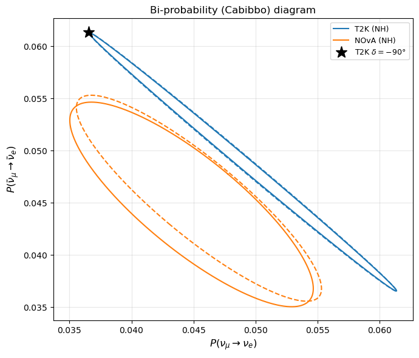
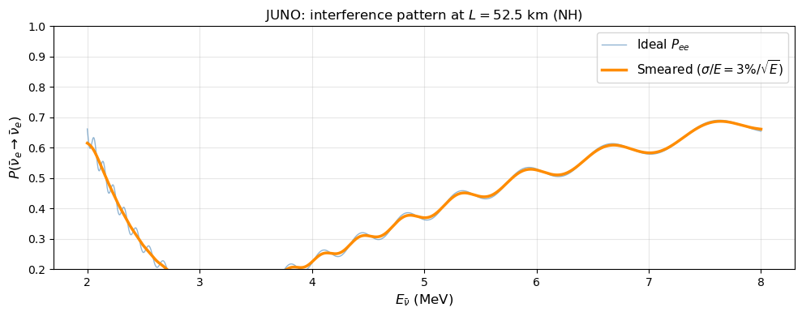
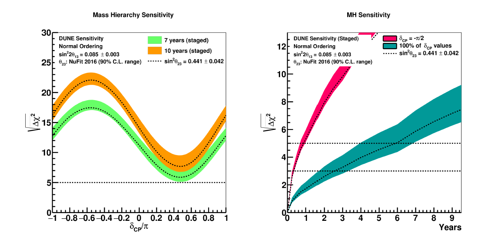
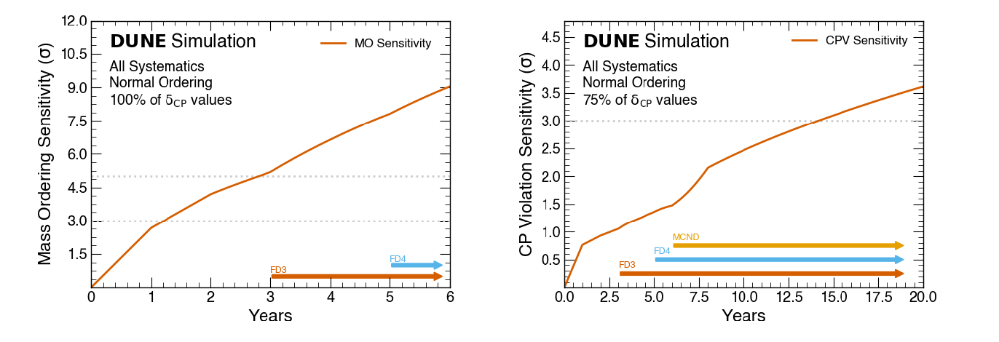
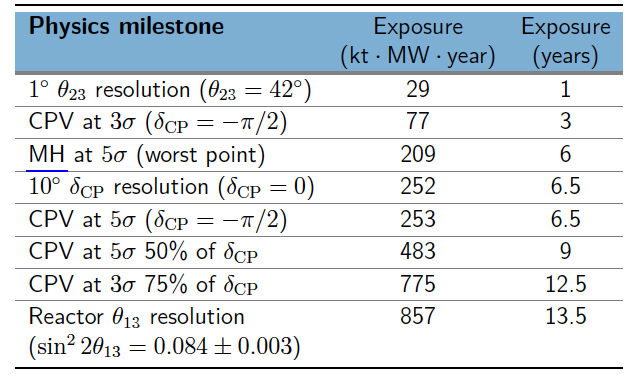
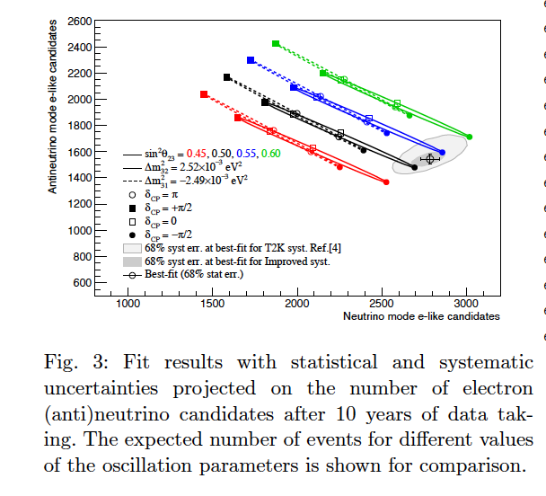
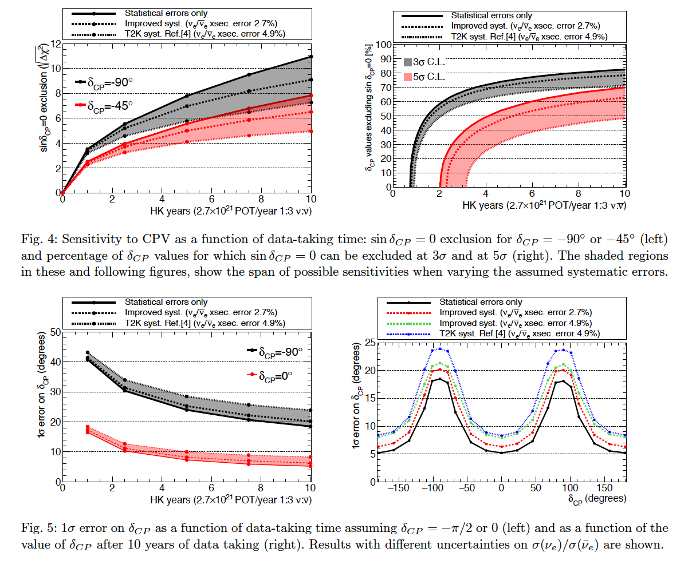

Neutrino Oscillations: Experimental Evidence
Contents
Neutrino Oscillations: Experimental Evidence#
Theory foundations (two-family oscillations, MSW matter effects, PMNS matrix) are covered in Neutrino Oscillations: Theory and Foundations.
import time
print(' Last version ', time.asctime() )
Last version Mon Mar 2 18:29:36 2026
# general imports
%matplotlib inline
%reload_ext autoreload
%autoreload 2
# numpy and matplotlib
import numpy as np
import pandas as pd
import matplotlib.pyplot as plt
import scipy.stats as stats
import scipy.constants as units
plt.style.context('seaborn-colorblind');
SBL Reactor Experiments. The \(\theta_{13}\) angle#
|

Short Base Line experiments, searching for \(\nu_e \to \nu_e\) disappearance, with \(E\) in \(1\) MeV and distance \(1\) km, are sensitive to \(\theta_{13}\) in the \(\Delta m^2_A\) range.
Daya Bay Experiment#
|
|


6 reactors 2.9 GW, 6 detectors: 2 near (470 m, 576 m), one far (1648 km)
layer detectors: LS with Gd, LS free of Gd, Veto (pure water), 160 tons
calibrated with radioactive sources: \(^{137}\)Cs, \(^{60}\)CO,
Observation of oscillation with \(\theta_{13}\), Daya Bay [26], in 2012.
Daya Bay results 2018 [27]
Reno Experiment#
6 reactors (~2.8 GW), near (294 m) and far detector (1383m)
layers: LS + Gd, LS + Veto (pure water), 15,2 ton
|

Reno results 2018 [28]
DoubleCHOOZ#
|
|


6 reactors (~2.8 GW), a far detector (1050m)
layers: LS + Gd, LS + Veto (pure water)
Double Chooz 2019 [29]
Latest summary (Neutrino 2024)
Exercise: Daya Bay and the reactor determination of \(\theta_{13}\)
At short baselines (\(L\sim 1\)–2 km, \(E\sim 3\) MeV), only the fast atmospheric oscillation contributes. The \(\bar\nu_e\) survival probability reduces to: $\( P(\bar\nu_e \to \bar\nu_e) \simeq 1 - \sin^2 2\theta_{13}\,\sin^2\!\left(1.267\,\frac{\Delta m^2_{31}\,L}{E}\right) \)$
Questions:
At Daya Bay’s far detector (\(L = 1.648\) km) and \(E = 4\) MeV, compute \(\phi_{31}\). Is the experiment near the first oscillation maximum (\(\phi_{31} = \pi/2\))? At what energy would \(\phi_{31} = \pi/2\) exactly?
Daya Bay measured \(R_{\rm far/near} = 0.944\pm0.007\). Approximating \(\sin^2\phi_{\rm far} \approx \sin^2(1.267\,\Delta m^2_{31}\,L_{\rm far}/\langle E\rangle)\), extract \(\sin^2 2\theta_{13}\) and compare with NuFit-6.0.
Using
oscillations.osc_prob_3famwith NuFit-6.0 parameters, plot \(P(\bar\nu_e\to\bar\nu_e)\) vs \(E\in[1,10]\) MeV at \(L = 1.648\) km. Superimpose the two-family approximation \(P\simeq 1 - \sin^2 2\theta_{13}\sin^2\phi_{31}\). How large is the solar correction at this baseline?
import oscillations
oscillations.exercise_dayabay()
Q1 — phi31 at E = 4.0 MeV: 1.318 rad (0.419 pi)
First maximum at E = 3.4 MeV
Q2 — Extracted sin^2(2θ₁₃) = 0.0598, θ₁₃ = 7.07°
NuFit-6.0: sin^2(2θ₁₃) = 0.0865, θ₁₃ = 8.55°

Long Base Line Experiments : \(\delta\)-CP and mass hierarchy#
Long Base Line Experiments, searching for \(\nu_\mu \to \nu_e\) and \(\bar{\nu}_\mu \to \bar{\nu}_e\) are sensitive to \(\theta_{13}, \; \delta\) and the mass hierarchy.
The propagation is affected by the matter effects in the mantle of the Earth.
This oscillation is a second order oscillations and to be observed required larger massive detector and very intense neutrino fluxes.
List of Long Base Line Experiments#
The oscillation probability for LBL experiments [30]:
Where:
The first term is sensitive to mass hierarchy. \(V_e\) changes sign depending of \(\nu(\bar{\nu})\) oscillations.
The second term is sensitive to the mass hierarchy and the \(\delta\)-CP phase.
But the second term is suppressed by \(J\) with \(\sin 2 \theta_{13}\).
To observe both effects it is better to have several experiments with different ranges of energies and distances.
NOvA#
\(\nu_\mu\) NuMI beam from Fermilab to near Ash River, MN, 810 km. Near detector at 1 km.
Detector is 14.5 mrad off-axis. The \(\nu\) E peaks at 2 GeV.
14 k ton detector with planes of plastic PVC cells in vertical and horizontal orientation filled with liquid scintillator.
NOvA started operation in 2014 with \(\nu_\mu\) beam and since 2016 with \(\bar{\nu}\).
|
|


NOvA construction timelapse movie
NOvA results on \(\nu_\mu (\bar{\nu}_\mu)\) disappearance
NOvA is sensitive to the atmospheric oscillations regime, with the \(\nu_\mu \to \nu_\mu\) (and anti-neutrinos) disappearance channels
¡Notice that there is an indetermination in which octant \(\theta_{23}\) is!
Energy distribution (Neutrino 2024) |
NOvA results 2021 [31] |
The main goal of NOvA is CP violation and the hierarchy problem in the \(\nu_\mu \to \nu_e\) (and anti-neutrinos) appearance channels.
|

|

NOvA results 2021 [31]
NOvA results 2021 [31]
|
|
TAUP 2019 conference |
ICHEP 2021 |


NOvA conference results: TAUP 2019, ICHEP 2022 |
|
|
NOvA neutrino 2024 |
Bayes posterior probability |


NOvA conference results: Neutrino 2024
NOvA: 10-year complete analysis (September 2025)#
Con el doble de exposición en modo neutrino respecto al análisis previo, NOvA publicó la medición de parámetros de oscilación más precisa de un único experimento LBL [42]:
Ordenación de masas: preferencia suave por NH (Bayes factor 2.4, probabilidad posterior NH \(\sim 70\%\)).
\(\delta_{\rm CP}\): resultados compatibles con los análisis previos; no se puede excluir la conservación de CP aún.
T2K#

T2K is less sensible to matter effects but have some sensibility to \(\delta\)-CP in \(\nu_\mu \to \nu_e\) and \(\bar{\nu}_\mu \to \bar{\nu}_e\) oscillations.
T2K PID (2019) [32]
|
|
T2K \(\nu_e, \bar{\nu}_e\) appareance, (2020) [32] |
\(\sin^2 \theta_{23}\) vs \(\delta\) CP |


T2K ‘elipses’ and CP posterior probability |
Results from Neutrino 2024
T2K + Super-Kamiokande: joint analysis (May 2024)#
Primera combinación de los datos atmosféricos de SK (3244 días) con los datos de acelerador de T2K (\(19.7 \times 10^{20}\) POT en modo \(\nu\)) [43]:
Exclusión de conservación de CP (\(J_{\rm CP} = 0\)) a 1.9\(\sigma\) en el análisis combinado (vs. 1.5σ con T2K solo).
Preferencia por ordenación normal.
Ligera tensión de octante: SK prefiere octante inferior, T2K el superior → la combinación debilita la sensibilidad al octante.
T2K + NOvA: first joint analysis (October 2025)#
La combinación de los dos grandes experimentos LBL, publicada en Nature en octubre 2025 [44], es el análisis LBL más completo hasta la fecha:
10 años de T2K + 6 años de NOvA de datos de neutrinos y antineutrinos.
La incertidumbre en \(|\Delta m^2_{32}|\) cae por debajo del 2% (mejor precisión mundial):
Intervalo a 3\(\sigma\) en \(\delta_{\rm CP}\):
Ordenación Normal: \(\delta_{\rm CP} \in [-1.38\pi,\; 0.30\pi]\)
Ordenación Invertida: \(\delta_{\rm CP} \in [-0.92\pi,\; -0.04\pi]\)
Violación de CP: si la ordenación fuese invertida (IO), los datos proporcionan evidencia de violación de CP en el sector leptónico.
Ordenación de masas: no hay preferencia fuerte por ninguna de las dos ordenaciones.
|
CP posterior probability (NOvA and T2K) |

Results from Neutrino 2024
|
CP posterior probability (NOvA and T2K) |

In NO both experiments shows differences, but in IO, the combination improves the result!
Results from Neutrino 2024
Exercise: LBL appearance probability and the CP asymmetry
The CP asymmetry in the \(\nu_\mu\to\nu_e\) appearance channel is: $\( \mathcal{A}_{\rm CP} = \frac{P(\nu_\mu\to\nu_e) - P(\bar\nu_\mu\to\bar\nu_e)}{P(\nu_\mu\to\nu_e) + P(\bar\nu_\mu\to\bar\nu_e)} \)\( It is proportional to \)\sin\delta_{\rm CP}\( and to the Jarlskog-like factor \)J \propto \sin 2\theta_{12}\sin 2\theta_{13}\sin 2\theta_{23}\(. It is also modified by matter effects, which mimic a non-zero \)\delta_{\rm CP}$.
Questions:
Using
oscillations.osc_prob_3fam, compute \(P(\nu_\mu\to\nu_e)\) and \(P(\bar\nu_\mu\to\bar\nu_e)\) at T2K kinematics (\(L = 295\) km, \(E = 0.6\) GeV) for \(\delta_{\rm CP} = -90°\) and \(\delta_{\rm CP} = +90°\). Which value gives the larger neutrino appearance probability? Compute \(\mathcal{A}_{\rm CP}\) in each case.Compute \(\mathcal{A}_{\rm CP}(\delta_{\rm CP})\) for \(\delta_{\rm CP}\in[0°,360°]\) at T2K (\(L=295\) km, \(E=0.6\) GeV) and NOvA (\(L=810\) km, \(E=2\) GeV). Plot both curves and explain why \(|\mathcal{A}_{\rm CP}|\) is larger at NOvA despite the smaller Jarlskog factor (hint: matter effects at longer baseline).
Plot the bi-probability diagram — the parametric curve \((P(\nu_\mu\to\nu_e),\,P(\bar\nu_\mu\to\bar\nu_e))\) as \(\delta_{\rm CP}\) varies from \(0°\) to \(360°\) — for T2K and NOvA, for both NH (solid) and IH (dashed). Mark the point \(\delta_{\rm CP} = -90°\). This “Cabibbo ellipse” visualises how the two experiments break the hierarchy–\(\delta_{\rm CP}\) degeneracy.
import oscillations
oscillations.exercise_lbl_biprobability()
Q1 — T2K (L = 295 km, E = 0.6 GeV):
delta = -90°: P(ν) = 0.0365 P(ν̄) = 0.0614 A_CP = -0.253
delta = +90°: P(ν) = 0.0614 P(ν̄) = 0.0365 A_CP = +0.253


Neutrino Mixing Matrix Parameters. Global fits#
There is an international effort to combine the experimental results in the framework of different neutrino scenarios.
This is the web page of NuFit group
|

NuFit-6.0 (2024) — ajuste global de tres sabores [33], actualizado con los datos de T2K, NOvA, Daya Bay, RENO, SK-atm, IceCube y los primeros resultados de JUNO. Los valores NuFit-6.0 (NH) son los valores por defecto en los widgets de oscilación de este notebook.
|

Next-generation oscillation experiments#
Los experimentos actuales T2K y NOvA han producido resultados pioneros sobre \(\delta_{\rm CP}\) y la ordenación de masas. Su análisis conjunto (Nature 2025) es el estado del arte actual.
Los futuros experimentos JUNO (ya en marcha), DUNE (~2031) y HyperKamiokande (~2028) cubrirán la determinación precisa de la ordenación de masas y la violación de CP.
SBL: JUNO (2025 – )#
El Jiangmen Underground Neutrino Observatory (JUNO), China, es un detector de centelleo líquido de 20 któn multipropósito, situado a 52.5 km de las centrales nucleares de Taishan y Yangjiang (17.4 GW\(_{\rm th}\) combinados).
Excelente resolución energética: \(\sigma_E/E \simeq 3\%/\sqrt{E/{\rm MeV}}\) gracias a los \(>\)45.000 PMTs.
Detecta \(\bar{\nu}_e\) de reactores via IBD (\(\bar{\nu}_e + p \to e^+ + n\)), además de neutrinos solares, geo-neutrinos y de supernovas.
Objetivos principales:
Determinación de la ordenación de masas con \(\geq 3\sigma\) (tras ~6.5 años de datos).
Medición de \(\Delta m^2_{21}\) y \(\sin^2 \theta_{12}\) con precisión \(<1\%\).
Estado actual:
Relleno del centellador líquido completado en 2025.
Inicio oficial de toma de datos: 26 agosto 2025.
Primeros resultados publicados: noviembre 2025 (sólo 59.1 días efectivos) [38].
|
|
|
location |
detector scheme |
detector image |


|
|


JUNO [34]
JUNO first results (November 2025)#
Con solo 59.1 días efectivos de datos, JUNO publicó la primera medición de los parámetros de oscilación solar con un único detector de gran masa a línea base media [38]:
Mejora de factor \(\sim 1.6\) en precisión respecto a toda la física previa combinada. Ajuste global post-JUNO [39]:
Perspectiva para la ordenación de masas:
JUNO necesita del orden de 6-7 años de datos para alcanzar \(3\sigma\) de sensibilidad a la ordenación. La clave es resolver el patrón de interferencia entre \(\Delta m^2_{31}\) y \(\Delta m^2_{32}\) en el espectro de \(\bar{\nu}_e\).
|
Espectro esperado con 6 años de datos [34] |
import oscillations
oscillations.plot_juno_spectrum()
The solar tension#
Los experimentos de reactor (KamLAND, JUNO) y los experimentos de neutrinos solares (SNO, SK) miden \(\Delta m^2_{21}\) de maneras distintas:
Reactor: miden la frecuencia de oscilación \(\bar{\nu}_e \to \bar{\nu}_e\) directamente.
Solar: miden la transición adiabática MSW \(\nu_e \to \nu_2\) y la supervivencia en la zona de transición vacío-materia (resonancia de Mikheyev-Smirnov-Wolfenstein).
Valores actuales (2026):
Fuente |
\(\Delta m^2_{21}\) [\(10^{-5}\) eV\(^2\)] |
|---|---|
KamLAND (reactor) |
\(7.49 \pm 0.20\) |
JUNO (reactor, 2025) |
\(7.50 \pm 0.12\) |
Solar (SNO + SK) |
\(\sim 6.9\) |
Global post-JUNO |
\(7.48 \pm 0.10\) |
La discrepancia es de \(\sim 1.5\sigma\). Si persiste con más estadística JUNO podría ser indicio de nueva física (interacciones no estándar, NSI, o variación de la densidad solar). JUNO también medirá directamente neutrinos solares, permitiendo comparar ambas medidas con el mismo detector.
Exercise: JUNO and the reactor spectrum interference pattern
At \(L = 52.5\) km, the \(\bar\nu_e\) spectrum carries two oscillation frequencies. The survival probability at leading order in \(\theta_{13}\) is: $\( P_{ee} \approx 1 - \cos^4\theta_{13}\sin^2 2\theta_{12}\sin^2\!\frac{\Delta m^2_{21} L}{4E} - \sin^2 2\theta_{13}\!\left(\cos^2\theta_{12}\sin^2\phi_{31} + \sin^2\theta_{12}\sin^2\phi_{32}\right) \)\( NH and IH differ in the sign of \)\Delta m^2_{31}$, which shifts the relative phase of the two fast oscillations — the key to JUNO’s mass ordering determination.
Questions:
At \(E = 5\) MeV and \(L = 52.5\) km, compute \(\phi_{21}\), \(\phi_{31}\) and \(\phi_{32}\) with NuFit-6.0 parameters for NH and IH. How many complete fast-oscillation cycles fit in the energy window \(E\in[2,8]\) MeV?
Use
oscillations.plot_juno_spectrumto switch between NH and IH. In which region of the spectrum (\(E \lesssim 4\) MeV or \(E\gtrsim 4\) MeV) do the two orderings show the largest difference? Explain qualitatively in terms of the interference condition \(\phi_{31} \approx \phi_{32} + n\pi\).JUNO’s energy resolution is \(\sigma_E/E \simeq 3\%/\sqrt{E/\mathrm{MeV}}\). Using
oscillations.osc_prob_3fam, compute \(P_{ee}(E)\) over \(E\in[2,8]\) MeV and convolve it with a Gaussian of width \(\sigma_E(E)\). Plot both the ideal and smeared spectra. Verify that the fast oscillations survive the smearing.
import oscillations
oscillations.exercise_juno_smearing()
Q1 — Phases at E = 5 MeV, L = 52.5 km:
NH: phi21 = 1.0 phi31 = 33.6 phi32 = 32.6 (rad)
IH: phi21 = 1.0 phi31 = 33.6 phi32 = 32.6 (rad)
Fast oscillation cycles in [2, 8] MeV: 10.0

LBL: DUNE (~2031 – )#
Detector LArTPC de 35 kt activos (Fase I) en Sanford Underground Research Facility (SURF), South Dakota, a 1300 km del haz de neutrinos LBNF/PIP-II de Fermilab.
|
|
Esquema del experimento |
Probabilidad de aparición |

Mide desaparición de \(\nu_\mu (\bar{\nu}_\mu)\) y aparición de \(\nu_e(\bar{\nu}_e)\) a \(E \sim 3\) GeV.
Espera recoger \(\sim 10^{3}\) \(\nu_e(\bar{\nu}_e)\) y \(\sim 10^{4}\) \(\nu_\mu(\bar{\nu}_\mu)\) por año en plena potencia.
Gran programa de física: neutrinos de supernovas, decaimiento del protón…
Haz LBNF a 1.2 MW (Fase I) → 2.4 MW (Fase II), gracias al nuevo linac superconductor PIP-II.
Detector Far a 1.5 km de profundidad bajo SURF (South Dakota).
Fase I: 2 módulos LArTPC de 17 kt cada uno (35 kt activos / 70 kt total):
FD1: Horizontal Drift TPC (HD-TPC), basado en ProtoDUNE-HD.
FD2: Vertical Drift TPC (VD-TPC).
Estado actual (2025-2026):
Excavación de las cavernas en SURF completada en 2024.
Acero del criostato enviado desde CERN; instalación subterránea a partir de principios de 2026.
2×2 prototipo ND-LAr: primeros neutrinos del acelerador detectados en agosto 2024 en Fermilab (tecnología LArPix 3D) [41].
ProtoDUNE-HD (CERN) completó toma de datos de haz de pruebas en 2024; ProtoDUNE-VD en 2025.
Inicio de física de alta potencia esperado: ~2030-2031 [36].
Dos prototipos a escala 1:20 operados en CERN:
ProtoDUNE-HD (Single-phase): carga de ionización derivada horizontalmente en LAr y leída en cables. Deriva de 3.5 m, campo 500 V/cm. Tomó datos de haz de pruebas en 2022 y 2024 [35].
ProtoDUNE-VD (Vertical Drift): carga de ionización derivada verticalmente con amplificación en fase gaseosa. Longitud de deriva 12 m. Tomó datos de haz en 2025.
|
Previous experience with ICARUS at LNGS
ICARUS event [35] (2011) of a \(\nu_\mu\) CC interaction (CERN CGNS beam to LNGS)
Currently two large LArTPC prototypes (ProtoDUNE) operating at CERN (2018-)
La Fase I del detector DUNE consistirá en 2 módulos LArTPC:
FD1 (Horizontal Drift): ionización derivada horizontalmente, basado en ProtoDUNE-HD (CERN). Toma de datos de haz de pruebas completada en 2024.
FD2 (Vertical Drift): ionización derivada verticalmente. ProtoDUNE-VD completó datos en 2025.

Las sensibilidades de DUNE a la ordenación de masas y a \(\delta_{\rm CP}\) [36]:


DUNE report [36]
As a function of the Modules

DUNE report [36]

DUNE report [36]
HyperKamiokande (2028 – )#
Esquema del detector |
Caverna excavada |
Estado de construcción (2025-2026):
Excavación de la caverna principal (330.000 m³ de roca) completada el 31 de julio de 2025 — una de las mayores excavaciones artificiales en roca.
Construcción del tanque de agua (260.000 m³) e instalación de los detectores prevista para 2025-2027.
Inicio de toma de datos: 2028 (sin datos de física aún).
Características del detector:
78 m de alto, 74 m de diámetro → 260 kt de agua (50 kt activos T2K, 186 kt activos HK).
Más de 40.000 nuevos PMTs de alta eficiencia cuántica (\(\times 2\) respecto a SK) [37].
Factor \(8.5\times\) SuperKamiokande.
Haz de J-PARC:
T2K opera desde diciembre 2023 con haz mejorado a 710–760 kW (+40% respecto a la operación anterior), aumentando la corriente de la bocina de 250 kA a 320 kA [40].
Objetivo para HK: 1.3 MW (previsto ~2028), reduciendo el período de repetición de 2.48 s a 1.16 s.


HK Neutrino 2024 conference

HK report (2018) [37]
|
|


{kind=link}
{kind=link}
{kind=link}
{kind=link}
{kind=link}
{kind=link}
{kind=link}
{kind=link}
{kind=link}
{kind=link}
{kind=link}
{kind=link}
{kind=link}
{kind=link}
{kind=link}
{kind=link}
{kind=link}
{kind=link}
{kind=link}
{kind=link}
{kind=link}
{kind=link}
{kind=link}
{kind=link}
{kind=link}
{kind=link}
{kind=link}
{kind=link}
HK report (2018) [37]
{kind=link}

Draft preliminary
Summary and conclusions#
Las oscilaciones de neutrinos están establecidas con gran precisión en los regímenes solar y atmosférico.
Premio Nobel 2015 a T. Kajita (SK) y A. B. McDonald (SNO).
JUNO (en marcha desde agosto 2025): primeros resultados (nov. 2025) con 59 días de datos ya son los más precisos del mundo en \(\Delta m^2_{21}\) y \(\sin^2\theta_{12}\). Se espera la determinación de la ordenación de masas en ~6 años.
T2K y NOvA (en marcha):
Análisis individual NOvA con 10 años de datos (sep. 2025): medición más precisa de \(|\Delta m^2_{32}|\) en un único experimento.
Primer análisis conjunto T2K + NOvA publicado en Nature (oct. 2025): \(|\Delta m^2_{32}|\) con precisión < 2%; evidencia de violación de CP si la ordenación es invertida.
HyperKamiokande (excavación completada jul. 2025, datos desde 2028): cubrirá violación de CP y ordenación con la mayor estadística.
DUNE (~2031): experimento LArTPC de 35 kt a 1300 km; primera detección de neutrinos con el prototipo 2×2 en ago. 2024.
Preguntas abiertas: escala absoluta de masas, naturaleza Dirac o Majorana, violación de CP en el sector leptónico, y la tensión solar en \(\Delta m^2_{21}\).
High-Energy Neutrino Astronomy: IceCube and KM3NeT#
Beyond accelerator and reactor experiments, neutrinos are also detected from astrophysical sources at TeV–PeV energies, opening neutrino astronomy.
IceCube#
IceCube is a 1 km³ Cherenkov detector at the South Pole (2 km deep in Antarctic ice), instrumented with 5160 digital optical modules.
Key results:
First detection of a diffuse astrophysical neutrino flux (2013), with \(E^{-2.5}\) power-law spectrum between 60 TeV and 10 PeV
First point source: NGC 1068 (Seyfert II galaxy) at 4.2σ significance (2022), arXiv:2209.04519
Galactic plane emission detected at 4.5σ (2023), arXiv:2307.04427
Oscillation studies: \(\nu_\mu\) disappearance in 20–50 GeV atmospheric ν
KM3NeT#
KM3NeT is a deep-sea Cherenkov telescope in the Mediterranean, with two detectors: ARCA (Astroparticle Research with Cosmics in the Abyss, Sicily) for astrophysical ν, and ORCA (Oscillation Research with Cosmics in the Abyss, France) for atmospheric ν and mass ordering.
ORCA highlights:
Measurement of \(\theta_{23}\) and \(|\Delta m^2_{31}|\) with atmospheric neutrinos
Sensitivity to mass ordering with 3 years of data
First ORCA results (2024): consistent with NuFit values
Connection to oscillations: at these energies, matter effects in the Earth modulate the oscillation pattern — ORCA is particularly sensitive to the mass ordering via Earth-crossing neutrinos at \(E \sim 5\text{--}20\) GeV.
References#
[1] B. Pontecorvo, Sov. Phys. JETP 6 (1957) 429; B. Pontecorvo, Sov. Phys. JETP 7 (1958) 172.
[2] B. Pontecorvo, Sov. Phys. JETP 26 (1968) 984.
[2] Z. Maki, M. Nakagawa and S. Sakata, Prog. Theor. Phys. 28 (1962) 870.
[3] B. Pontecorvo, Sov. Phys. JETP 26 (1968) 984.
[4] V. N. Gribov and B. Pontecorvo, Phys. Lett. B28 (1969) 493.
[5] J. N. Bahcall et al., Rev. Mod. Phys. 54, 767 (1982); N. Bahcall, A. M. Serenelli and S. Basu, Astrophys. J. 621, L85 (2005), arXiv:astro-ph/0412440.
[6] R. Davis, Jr., D. S. Harmer and K. C. Hoffman, Phys. Rev. Lett. 20, 1205 (1968).
[7] B. T. Cleveland et al., Astrophys. J. 496, 505 (1998).
[8] C. Pena-Garay and A. Serenelli (2008), [arXiv:0811.2424].
[9] J. N. Abdurashitov et al. (SAGE), J. Exp. Theor. Phys. 95, 181 (2002), [Zh. Eksp. Teor. Fiz.122,211(2002)], [arXiv:astro-ph/0204245].
[10] W. Hampel et al. (GALLEX), Phys. Lett. B447, 127 (1999).
[11] M. Altmann et al. (GNO), Phys. Lett. B616, 174 (2005), [hep-ex/0504037].
[12] J. N. Abdurashitov et al. (SAGE), Phys. Rev. C80, 015807 (2009), [arXiv:0901.2200].
[13] K. Abe et al. (Super-Kamiokande), Phys. Rev. D94, 5, 052010 (2016), [arXiv:1606.07538]
[14] N. Vinyoles et al., Astrophys. J. 835, 2, 202 (2017), [arXiv:1611.09867].
[15] Q. R. Ahmad et al. (SNO), Phys. Rev. Lett. 87, 071301 (2001), [arXiv:nucl-ex/0106015].
[16] Q. R. Ahmad et al. (SNO), Phys. Rev. Lett. 89, 011301 (2002), [arXiv:nucl-ex/0204008].
[17] B. Aharmim et al. (SNO), Phys. Rev. C88, 025501 (2013), [arXiv:1109.0763].
[18] B. Aharmim et al. (SNO), Phys. Rev. C72, 055502 (2005), [arXiv:nucl-ex/0502021].
[19] S. P. Mikheev and A. Yu. Smirnov, Sov. J. Nucl. Phys. 42 (1985) 913, Yad. Fiz. 42 (1985) 1441.
[20] G. Bellini et al., Borexino Collaboration, Phys. Rev. D 82 (2010) 033006; G. Bellini et al., Phys. Rev. Lett. 107 (2011) 141302; M. Agostini et al., BOREXINO Collaboration, Nature 562 (2018) 505.
[21] K. Eguchi et al. (KamLAND), Phys. Rev. Lett. 90, 021802 (2003), [hep-ex/0212021].
[22] T. Araki et al. (KamLAND), Phys. Rev. Lett. 94, 081801 (2005), [hep-ex/0406035];
[23] A. Gando et al. (KamLAND), Phys. Rev. D88, 3, 033001 (2013), [arXiv:1303.4667];
[24] Y. Fukuda et al. (Super-Kamiokande), Phys. Rev. Lett. 81, 1562 (1998), [hep-ex/9807003].
[25] Y. Ashie et al. (Super-Kamiokande), Phys. Rev. Lett. 93, 101801 (2004), [hep-ex/0404034].
[26] P. Adamson et al. (MINOS), Phys. Rev. Lett. 110, 25, 251801 (2013), [arXiv:1304.6335].
[26] F. P. An et al. (Daya Bay), Phys. Rev. Lett. 108, 171803 (2012), [arXiv:1203.1669].
[27] D. Adey et al. (Daya Bay), Phys. Rev. Lett. 121, 24, 241805 (2018), [arXiv:1809.02261]. 6th February, 2020
[28] G. Bak et al. (RENO), Phys. Rev. Lett. 121, 20, 201801 (2018), [arXiv:1806.00248].
[29] H. de Kerret et al. (Double Chooz) (2019), [arXiv:1901.09445].
[30] A. Cervera et al., Nucl. Phys. B 579 (2000) 17 [Erratum: Nucl. Phys. B 593 (2001) 731], [arXiv:hep-ph/0002108]; M. Freund, Phys. Rev. D 64 (2001) 053003, [arXiv:hep-ph/0103300]; E. K. Akhmedov et al., JHEP 0404 (2004) 078, [arXiv:hep-ph/0402175].
[31] M. A. Acero et al. (NOvA), Phys. Rev. Lett. 123, 151803 (2019), [arXiv:1906.04907]; M. A. Acero et al. (NOvA), Phys. Rev. D 106, 032004 (2022), [arXiv:2108.08219].
[32] K. Abe et al. (T2K), Nature 580, 339 (2020), [arXiv:1910.03887]; K. Abe et al. (T2K), Eur. Phys. J. C 83, 782 (2023), [arXiv:2303.03222].
[33] I. Esteban et al. (NuFit-6.0), JHEP 12 (2024) 216, [arXiv:2410.05380], www.nu-fit.org.
[34] F. An et al. (JUNO), J. Phys. G43, 030401 (2016), [arXiv:1507.05613].
[35] C. Rubbia et al., JINST 6, P07011 (2011), [arXiv:1106.0975].
[36] B. Abi et al. (DUNE), JINST 19 (2024), [arXiv:2312.03130]; DUNE Physics Report, [arXiv:2002.03005].
[37] K. Abe et al. (Hyper-Kamiokande), [arXiv:1805.04163]; K. Abe et al. (HK), Frontiers in Physics 12 (2024), [arXiv:2309.03009].
[38] A. Abusleme et al. (JUNO), First measurement of reactor antineutrino oscillations at JUNO (Nov. 2025), [arXiv:2511.14593].
[39] M. C. Gonzalez-Garcia et al., Updated bounds on (1,2) neutrino oscillation parameters after first JUNO results (Nov. 2025), [arXiv:2511.21650].
[40] T2K Collaboration, T2K enters a new phase (Jan. 2024), J-PARC press release.
[41] DUNE Collaboration, DUNE Phase II Detectors (2025), [arXiv:2412.14941].
[42] M. A. Acero et al. (NOvA), Precision measurement with 10 years of data (Sep. 2025), [arXiv:2509.04361].
[43] K. Abe et al. (T2K + SK), First joint oscillation analysis of SK atmospheric and T2K accelerator neutrino data (May 2024), [arXiv:2405.12488].
[44] T2K and NOvA Collaborations, Joint neutrino oscillation analysis from T2K and NOvA, Nature (Oct. 2025), [arXiv:2510.19888].